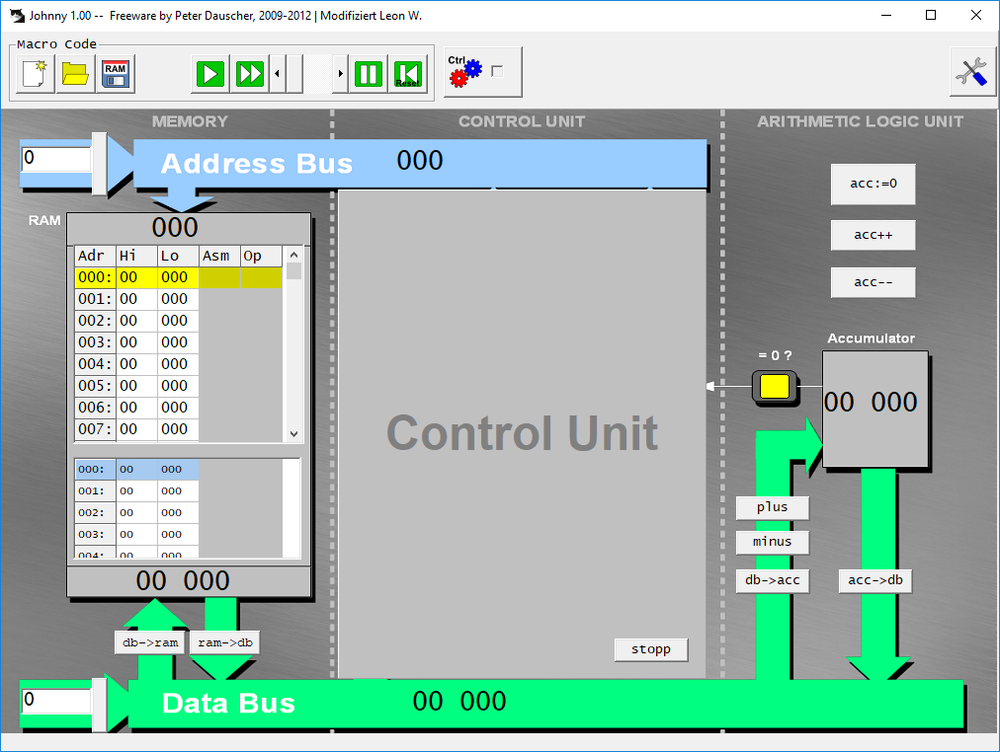
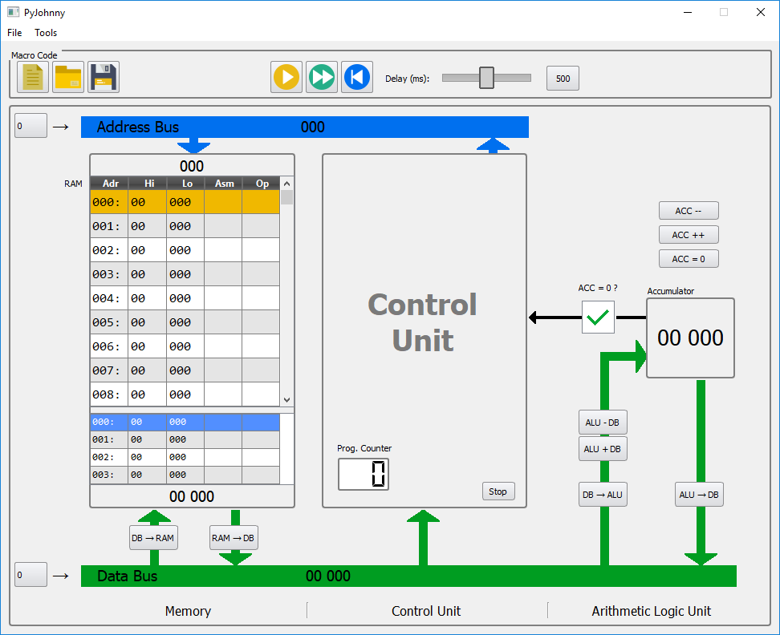
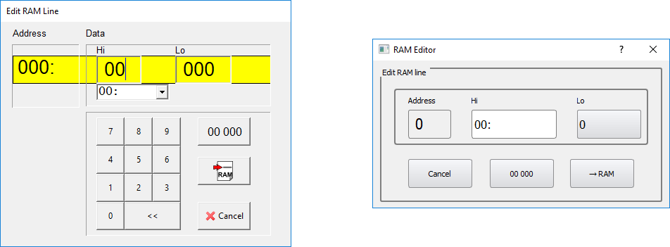
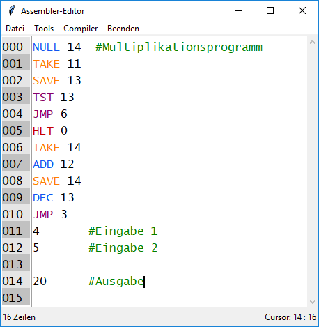

Johnny ist ein Programm von Peter Dauscher mit dem ein einfacher Von-Neumann-Rechner über eine grafische Oberfläche simuliert und programmiert werden kann. Dokumentation
PyJohnny ist ein Python-Remake von Johnny mit modernerer Benutzeroberfläche, schnellerem Programmablauf und Minimalisierung auf den Macrocode. Die Bedienung und Steuerelemente sind nahezu identisch zu Johnny, weshalb die Dokumentation auch für PyJohnny hilfreich ist.
Das Programm im RAM wird über ein GUI zusammengeklickt.
Bevorzugt man jedoch das Schreiben des Codes mit der Tastatur, kann über das Menü "Tools" oder der Taste F1 der Assembler-Editor gestartet werden. Mit diesem kann Assembler-Code geschrieben, auf korrekte Syntax geprüft und zu einer .ram-Datei kompiliert werden. Str+Leer öffnet die Codevervollständigung mit den verfügbaren Befehlen. Kommentare nach einer Raute ("#") werden vom Compiler ignoriert. Über den Menüpunkt "Dekompilieren..." können auch breits kompilierte .ram-Dateien bearbeitet werden.
